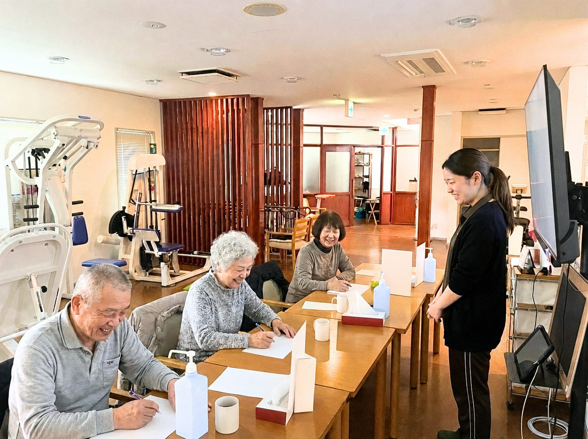
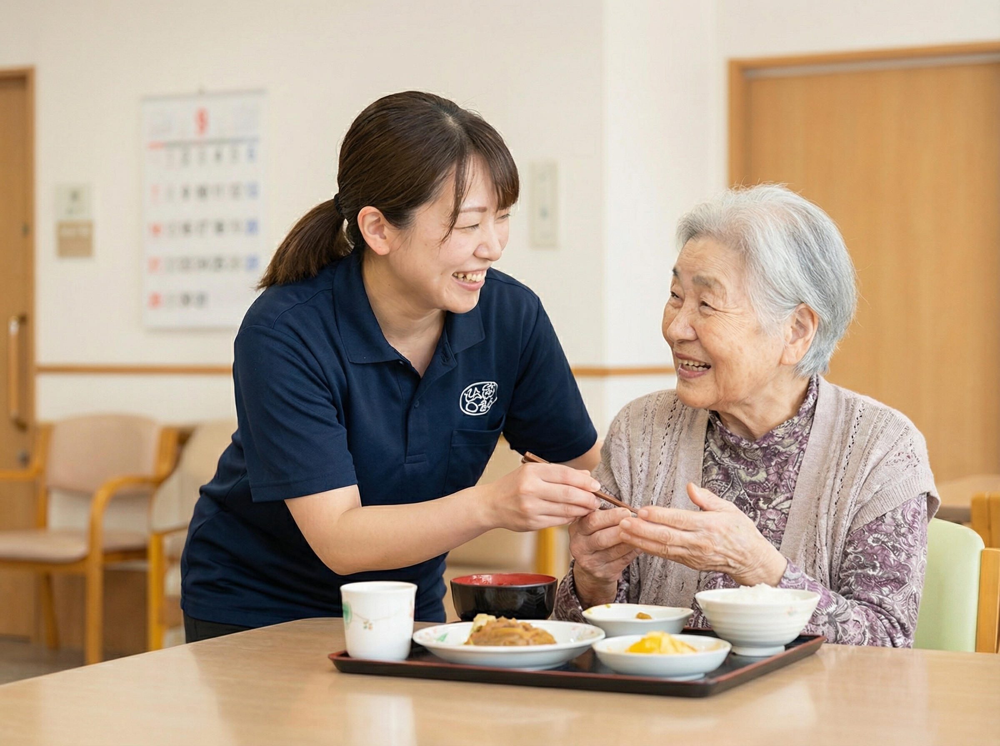
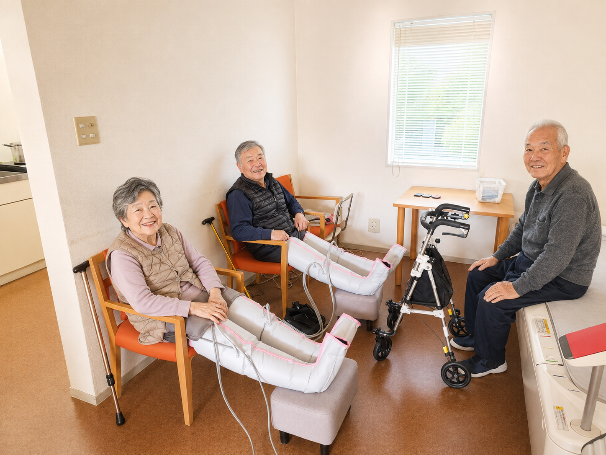
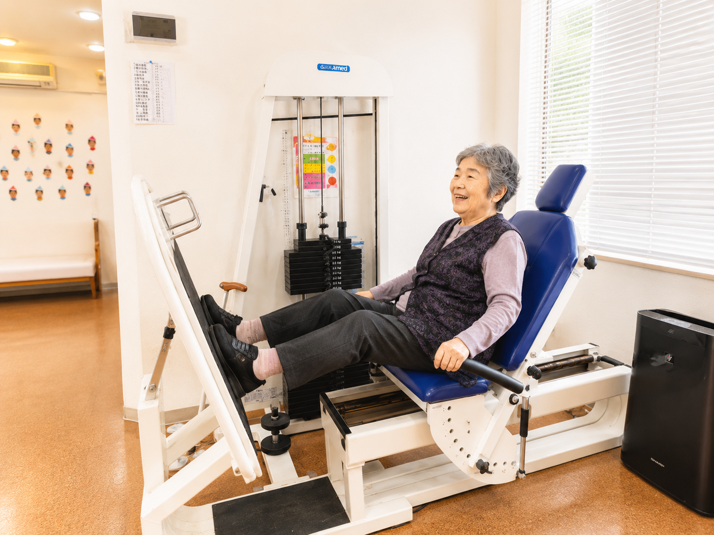
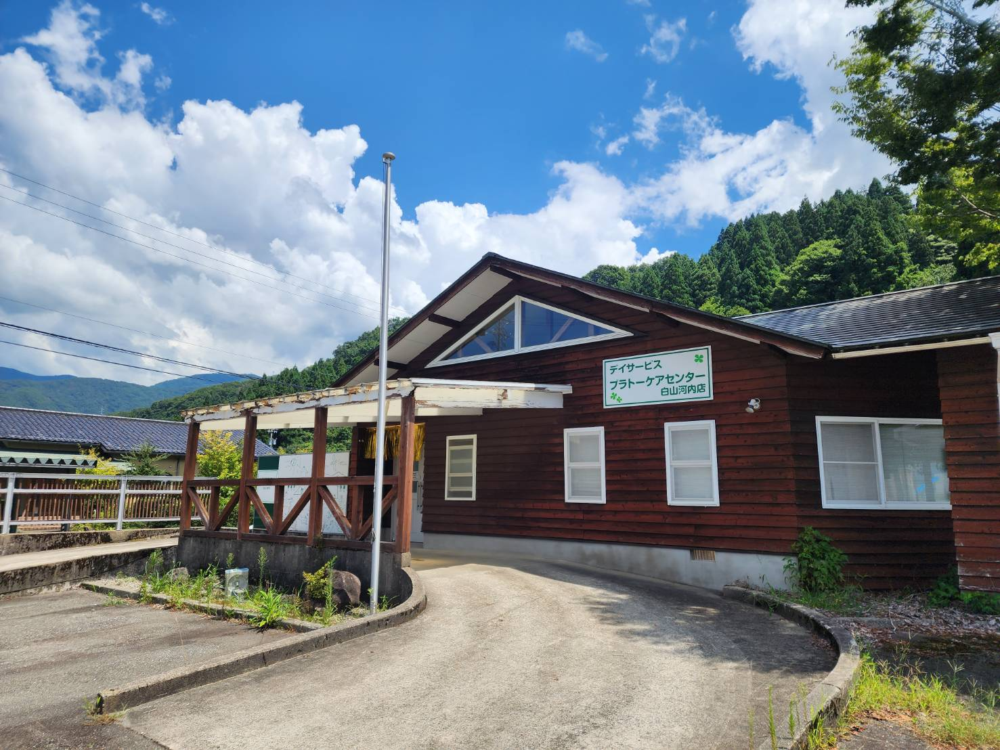

FOR CARE MANAGERS / KAWACHI
月・水・金に集中する、
月・水・金に集中する、
定員10名の地域密着型。
白山市河内町の山間部にある小規模事業所です。地域密着型通所介護と介護予防型通所サービスに対応し、機能訓練、食事、入浴、送迎を一日の中で組み合わせます。
営業日月・水・金
定員10名
提供時間9:30〜16:30
利用区分要介護・介護予防
AVAILABILITY
月・水・金の空き状況
河内店の入力表から、施設とお風呂の空きを表示します。シート内の火・木・土は重説上の営業日ではないため、この叩き台では表示していません。
| 曜日 | 施設の空き | お風呂の空き |
|---|
ACCEPTANCE
利用区分と紹介前の確認
書類で確認できた範囲です。個別の受け入れ可否は、心身の状態、ケアプラン、送迎経路を確認して決定します。
| 確認項目 | 書類上の状況 | 補足 |
|---|---|---|
| 地域密着型通所介護 | 対応あり | 要介護1〜5。定員10名です。 |
| 介護予防型通所サービス | 対応あり | 要支援1・事業対象者の週1回、要支援2・事業対象者の週2回の月額表があります。 |
| 機能訓練 | 対応あり | 料金表には個別機能訓練加算Ⅰイが含まれています。実施内容は個別計画で確認します。 |
| 入浴 | 対応あり | 希望日、お風呂の空き、介助方法を事前に確認します。 |
| 食事 | 対応あり | 昼食600円、おやつ50円です。 |
| 送迎 | 対応あり | 原則、ご自宅と事業所の間です。通常の実施地域外は別途条件があります。 |

TEN PEOPLE / ONE FLOOR
一人ひとりと向き合える空間
10名の規模大人数の環境が合いにくい方に、少人数という選択肢を提示できます。
機能訓練・食事・入浴必要な内容を一日の中で組み合わせます。実施順は当日の状態で変わります。
白山市の対象地域一ノ宮、鶴来、蔵山、河内、鳥越の指定地区、吉野谷の一部が通常の実施地域です。
SERVICE SCENES紹介前に伝えたい、
紹介前に伝えたい、
三つの過ごし方
食事、休息、機能訓練を一日の中で組み合わせます。実施内容と介助方法は個別に確認します。



人物の顔はプライバシー保護のため加工しています。
PRICE
料金シミュレーター
2026年6月版の密着・予防の重要事項説明書に基づく概算です。地域密着型は7〜8時間を初期値にしています。
この試算の前提料金表の金額には、介護職員等処遇改善加算Ⅱロが含まれています。7時間以上8時間未満の料金表を基準に、入浴介助加算Ⅰは1割45円／日を別加算しています。月単位では個別機能訓練加算Ⅱ23円、科学的介護推進体制加算45円を加えます。利用日数、加算、端数処理、中山間地域加算などで差が出ます。

PRACTICAL INFORMATION
紹介前の基本情報
| 事業所名 | プラトーケアセンター白山河内店 |
|---|---|
| サービス | 地域密着型通所介護・介護予防型通所サービス |
| 定員 | 10名 |
| 営業日 | 月曜日・水曜日・金曜日 |
| 営業時間 | 8:30〜17:30 |
| 提供時間 | 9:30〜16:30 |
| 通常の実施地域 | 白山市一ノ宮・鶴来・蔵山・河内地区、鳥越地区の指定地域、吉野谷地区の一部 |
| 所在地 | 石川県白山市河内町きりの里62 |
| 電話 | 076-220-7139 |
| 見学・相談担当 | 宮野 |
出典：河内 密着・予防 重要事項説明書・契約書 2026年6月版
FINAL CHECK BY PHONE
空き、送迎、入浴、受け入れ条件は電話で確定します。
希望曜日、住所、利用区分、入浴希望をお伝えください。